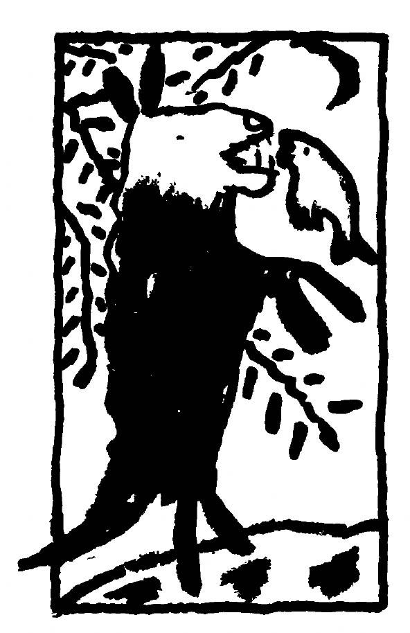

It is a cold, windy day in Brooklyn as I write this. My dreams this morning remain in the back of my mind, unwritten and unfortunately, soon to be forgotten. But I know that if I took the time to write them down in my journal that new and mysterious possibilities might emerge from that effort. It is a small effort that yields big rewards. Last night I dreamt of a high resolution computor monitor, which meant to me that I'm looking for a high degree of "resolution" in my activities, in which the DNB plays a major part.
The Bulletin has finally been edited, formatted, and laid out on the paste-up boards. Dale has done her last illustration and our weekly dream group has had a chance to look the text over for mistakes. I'm sure there are a few errors we missed. It seems a good issue to me. There is sharing going on from all levels of dreamwork. Each issue is an attempt to speak to those levels, so you will find very different perceptions side by side.
I have been publisher/editor of DNB for a full year now. It has been one of the most rewarding yet emotionally tiring experiences I've had. Some days I wake up thrilled to be a part of this movement toward self-awarenesss through dreams and other weeks when the subscriptions trickle in like molasses I get discouraged and wonder how to pay the printer and post office. I then feel lonely and wonder if DNB is important enough to the readers to help get more subscriptions through friends, gift subscriptions to family, or in feedback through letters and sharing. This is not a pyramidal hiearchy like many publications. We are a network and depend on a high level of committment and communication from those participating. Articles, letters, contacts, poetry... these all come from you. The editors don't go hunting this stuff up to fill in the spaces between slick ads.
One way you can truly help is to resubscribe without me nagging you. Check your label and note the four numbers on the upper right. 0984 means your subscription is due on August '84. 0784 means July '84, and so on. It's a hassle to have to send out a lot of little reminders. Remember, you can resubscribe before your sub is overdue and the remaining time will be credited accordingly.
My usual exhortation: share, share, share! No "dreamland diploma" is required, as Lynn Hallam (page 17) thought. If you are an isolated dreamer who wants to join or start a group, send in your name and address and we'll put your name in the Dream Calendar and crank up Little Blue, our computer, to see who is in your area. If you already are in a group, we'd love to hear about it, even if you're closed to new members. Your experiences are invaluable to others who feel more tentative and need a confidence boost.
Edith Gilmore will be regularly reviewing books starting next issue. We will be featuring an an article by Jeremy Taylor, whose book I highly reccommend: Dreamwork, published by Paullist Press. It not only has the best bibliograpy but is the most dedicated to non-professional dreamwork that I've seen in years. He is committed to his work and the reader feels inspired. Look for a review soon. Also recommended is Stillpoint Press, a small publisher of spiritual books from New Hampshire in my old stomping grounds. An excellent selection is available through their catalog. Write:
Stillpoint Publishing
PO Box 640 Meetinghouse Road
Walpole, NH 03608
We are also getting our own book list together. If you don't find one in this issue, look for it soon or write for one. Thank you to the following for contributing $25 or more to our coffers: Kay C. Greene, Will Phillips and Leon Van Leeuwen's dream group. If you want to contribute, the money will go directly into DNB. Please feel free to.
Also needed are more networkers. If you want to become one, write me and I'll keep you well supplied with DNB's, subscription blanks, and info on how to be a contact for your area. Here's a dream I had recently:
"I am helping a man with an underwater project. There are some cages that need to be disassembled and brought to the surface. A hysterical woman has tried but was unable to bring them up. Without asking anyone, I strip to my underwear, grab a mask and snorkel and dive in. The water extends under the land. The "cages" aren't deep (they are valuable) and the job is easy. I relish the challenge and can hold my breath for a long time. A dog-companion is underwater with me. I successfully disconnect the cages from one another and they're salvaged"
What this dream meant to me is that I have an ability to solve emotional problems by examining and taking apart old feelings of negative control (cages). The unconscious, or water, can be entered with confidence and success. The hysterical woman is my own tendency to "flip out" when problems arise, but my dream self easily takes matters in hand. The cages are valuable because of the insights they offer when raised to the surface, brought to waking awareness to be consciously examined much like an archeological dig reveals the lives of ancient inhabitants.
The day I had this dream I was full of confident excitement and anticipation, though I didn't know why. I realized after reflecting on the dream and discussing it with Dale that I had been avoiding looking at some personal problems connected with my past because of the emotions involved. But it turns out the self-examination was successful and fun as well. My "dog companion" is particularly touching. He was there to support me and have fun too!
There are times when I forget to do dreamwork and think that I can solve my problems simply by thinking about them intellectually. The result is the "hysterical woman". Entering the underwater world of my unconscious, where my patterns and feelings are laid out in story-fashion, is the best way to take care of personal problems. The only impediment is fear of the unknown and procrastination. The best attitude (for me) is one of "damn the torpedoes" and diving in.
In waking life I don't have nearly that level of 'confidence. My dream mind is a fearless explorer, eager to help. If only I might heed the message: Confidence furthers success. May you also have such pleasureable adventures!
~Chris Hudson